Geschichte und Gemeinschaftskunde
Lernende prüfen Geschichte(n) mit den Begriffen der kognitiven Landkarte. In Gemeinschaftskunde hat jede Position eine Quelle.
Mario Walter · Hilde-Domin-Schule Herrenberg
Fortbildung und Beratung · KI und digitaler Unterricht
An der Hilde-Domin-Schule Herrenberg übernehme ich Fortbildung und Beratung zu KI und digitalem Unterricht. Dafür habe ich Kidu entwickelt: eine Fortbildungsplattform für Lehrkräfte – zum Selbermachen und für die Beratung.
Stand: Kidu 4.58 vom 23.11.2026. Die Beratungsstunden beginnen im Dezember 2026. Kidu ist ein persönlicher Entwicklungsstand zur Diskussion und noch kein beschlossenes Schulkonzept.
Film »Was ist Kidu?« · 2:07 Minuten, ohne Ton. Er spricht Kolleg*innen an, deshalb das Du. Alle Bildschirme sind echte Seiten.
Film als Datei laden (MP4, 15 MB)
Das Kidu-Logo. Darunter die Frage: Was ist Kidu?
Die Startseite von Kidu im Tablet.
Kidu hilft dir, KI für deine Arbeit zu nutzen. Wann du sie brauchst. Wo du sie brauchst.
Wer dem Geist aus der Lampe nur sagt: »Ich habe Hunger«, bekommt vielleicht eine Bratwurst.
Aus dem Rauch werden zwölf Felder: Wissen, Sagen, Prüfen, Verantworten.
Wisse, was du willst. Und sag es.
Zum Beispiel: Die Anfrage »Mach mir ein Arbeitsblatt zur Bremsanlage« bringt etwas Übliches. Mit drei Angaben – erstes Ausbildungsjahr, viele lesen langsam, eine Seite – passt es zur Klasse.
Hier endet das Märchen: Der Geist irrt nie. KI schon.
Prüf, was du bekommst.
Zum Beispiel: Ein Erwartungshorizont aus der KI nennt die Aussage eines Historikers. Im Buch steht sie nicht.
Und Kidu hilft dir, digitalen Unterricht zu bauen.
Viele Klassen haben inzwischen Tablets. Das Arbeitsblatt wird nur digital abgeheftet. Ein digitaler Schnellhefter.
Wann macht das Gerät den Unterricht besser?
Punktuell: Erst selbst erklären – dann zeigt das Gerät die Musterlösung. (Fachbegriffe-Trainer, Sozialpädagogik, im Unterricht erprobt)
Phasenweise: 25 Minuten Rundgang zu zweit am Gerät – dann zurück in den Raum. (Wahlfach Demokratiebildung, Etappe 3, Entwurf)
Durchgängig: ein ganzes Schuljahr als Kompass – acht Etappen, in der Mitte die Kinderrechte.
Oder ein ganzer Kurs: drei Kapitel Geschichte, zwei Jahrgangsstufen, 36 Arbeitsblätter. Jede Stunde endet mit einem Satz – daraus wird die Lernspur.
Verdecken, Rückmelden, Messen, Variieren, Stufen, Bündeln.
Ob klein oder groß: Das Gerät tut eines von sechs Dingen, die Papier nicht kann. Gedeutet, gestritten und geurteilt wird im Raum.
Kidu: dazulernen. Ideen holen. Dich beraten lassen.
Endbild: Was hast du gerade vor?
Das System
Kidu hat zwei Ziele: KI-Kompetenz im Kollegium und die Kompetenz, digitalen Unterricht zu gestalten. Lehrkräfte arbeiten allein damit oder in einer Beratungsstunde. Kidu ist in eigener Initiative entstanden und nicht an eine Schule gebunden.
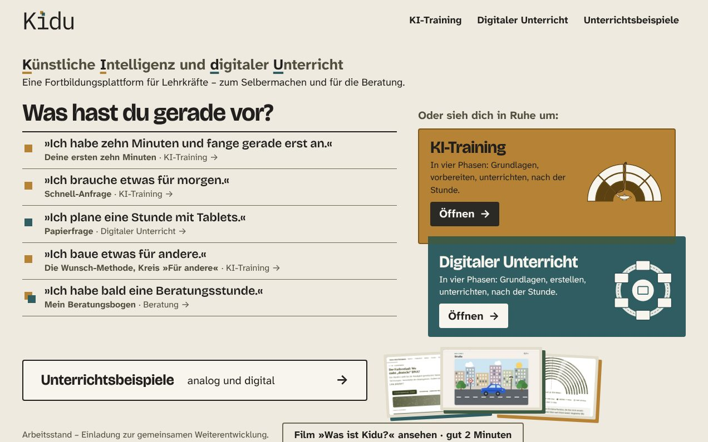
Der EinstiegEin Anliegen statt eines Menüs»Was hast du gerade vor?« Fünf Anliegen führen direkt zum passenden Werkzeug – von »Ich habe zehn Minuten und fange gerade erst an« bis »Ich habe bald eine Beratungsstunde«.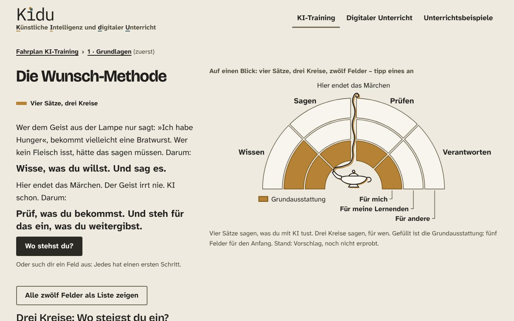
KI-TrainingDie Wunsch-MethodeVier Sätze: wissen, sagen, prüfen, verantworten. Dazu zwölf Trainingsaufgaben am eigenen Material und vier Phasen rund um die Stunde. Stand der Methode: Vorschlag, noch nicht erprobt.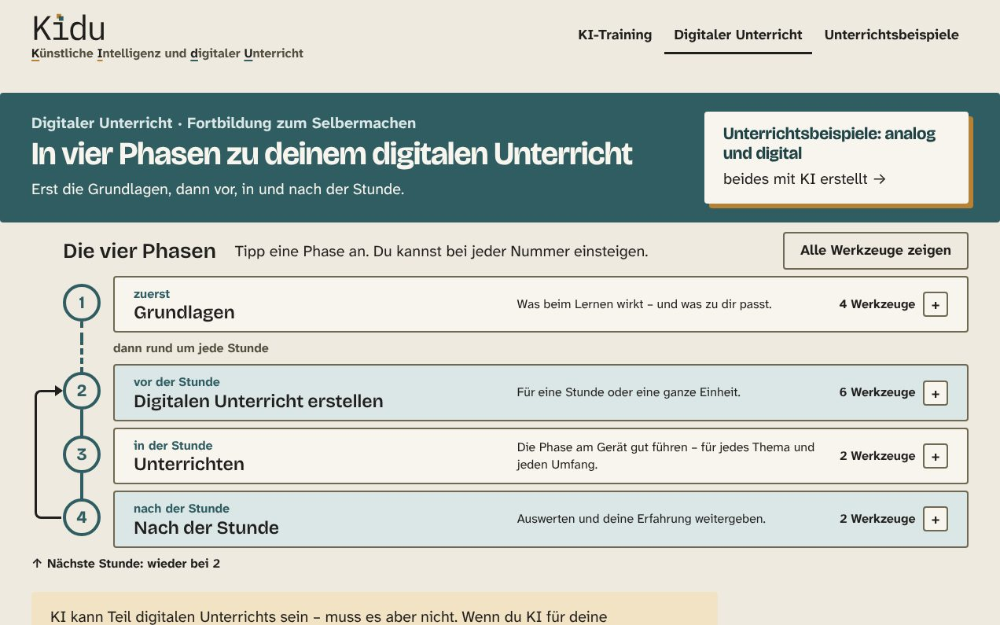
Digitaler UnterrichtIn vier Phasen zur eigenen StundeGrundlagen, erstellen, unterrichten, nach der Stunde. Vor dem Erstellen steht die Papierfrage: Geht es auf Papier genauso gut? »Bleib beim Papier« ist eine mögliche Antwort.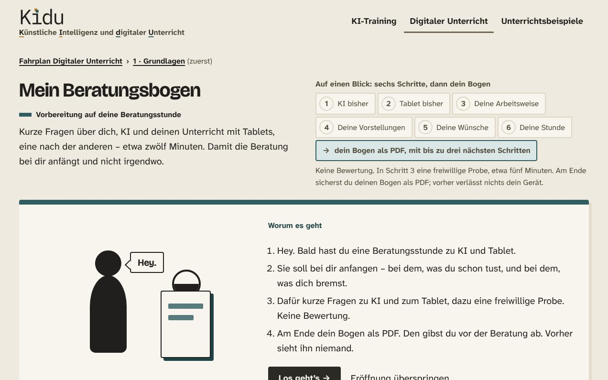
BeratungMein BeratungsbogenEtwa zwölf Minuten Fragen zu KI und Tablet, ohne Bewertung. Am Ende steht ein Bogen als PDF mit bis zu drei nächsten Schritten – damit die Beratungsstunde bei der Person anfängt.Dazu: neun Unterrichtsbeispiele aus vier Bereichen, je mit Film, Bildern und Beschreibung – und ein Skillkoffer mit den Anleitungen hinter den Werkzeugen. Die Beispiele stammen aus meinem eigenen Unterricht. Vier Fächer zeige ich hier ausführlicher.
Aus dem eigenen Unterricht · vier Fächer · vier Kurzfilme · 16 Minuten
Digitale Lernseiten für Geschichte, Gemeinschaftskunde, Psychologie und Demokratiebildung an einer beruflichen Schule. In allen vier legen sich Lernende fest, bevor das Material auflöst – und geurteilt wird im Raum, nicht am Gerät.
Die Filme haben keinen Ton und starten mit dem Abspielknopf. Alle Bildschirme zeigen die echten Lernseiten.
1 Erst festlegen
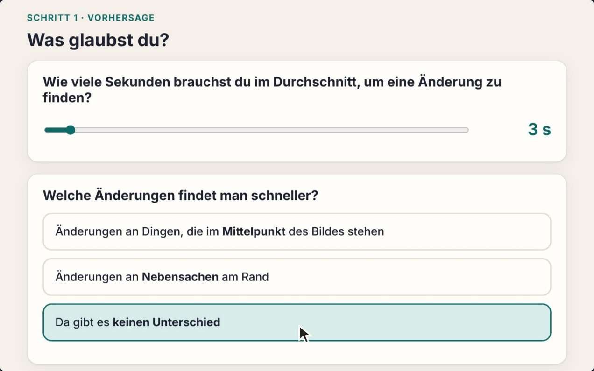
2 Dann aufdecken
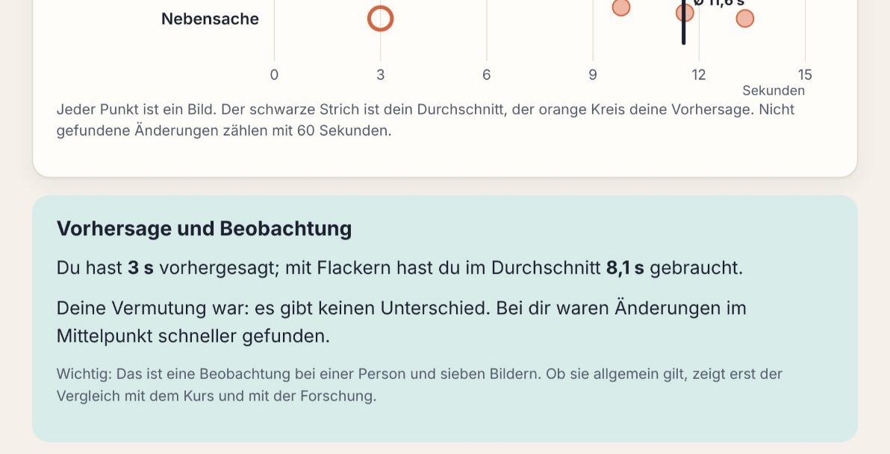
Aus Film 3, Psychologie: Die Vorhersage steht, bevor die eigenen Daten erscheinen. Die Eingaben sind Beispiele.
Wegweiser
Lernende prüfen Geschichte(n) mit den Begriffen der kognitiven Landkarte. In Gemeinschaftskunde hat jede Position eine Quelle.
Demokratiebildung für angehende Erzieher*innen: acht Etappen, in der Mitte die Rechte jedes Kindes. Der Leitfaden ist ein Entwurf und noch nicht erprobt.
Kidu, die Fortbildungsplattform für das Kollegium. Wann das Tablet etwas beiträgt und wann Papier reicht. Wie die Seiten mit einem KI-System entstehen.
Film 1 · Geschichte
Geschichte ist konstruiert, aber nicht beliebig.
Berufliches Gymnasium · GGK-Labor
Film 5:35 Minuten, ohne Ton
Stand der Lernseiten: Fassung 6.5 vom 23.11.2026.
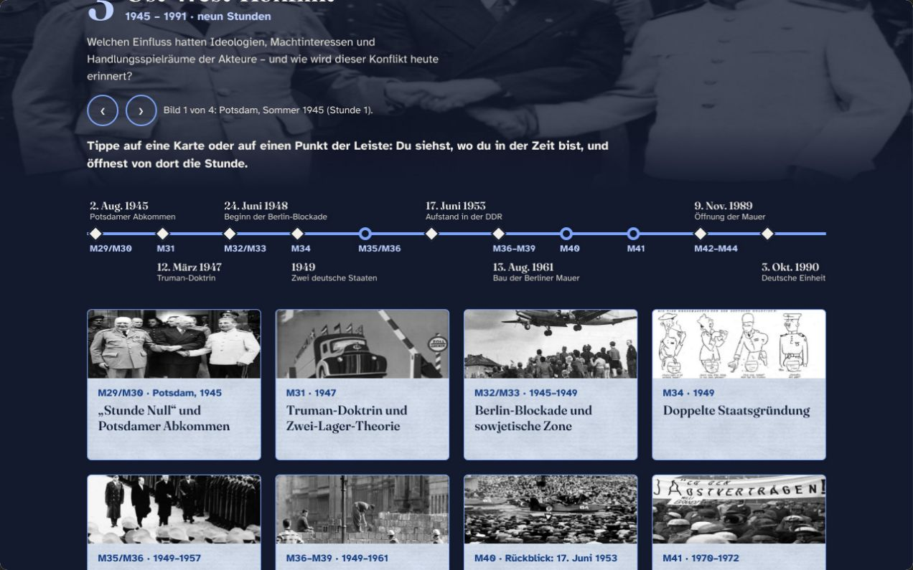
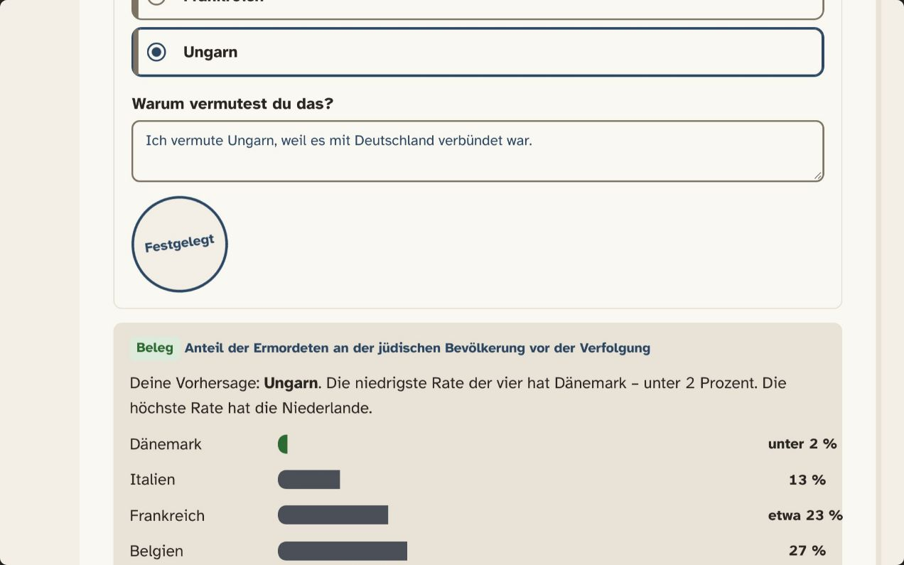
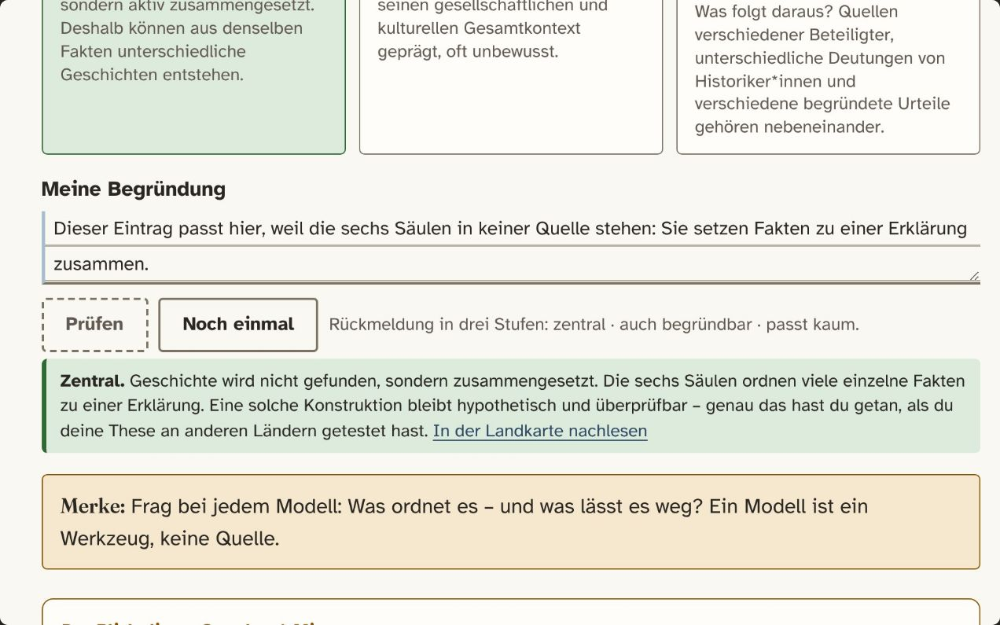
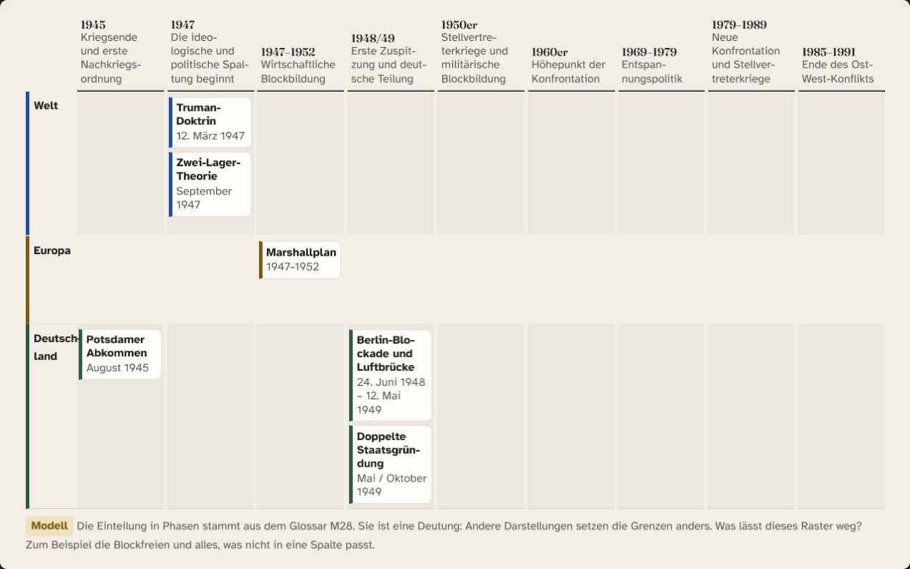
Film als Datei laden (MP4, 21 MB)
Dieselben Daten
Temperaturen
Truppenstärken
Verluste
Drei Geschichten
»Triumph der sowjetischen Strategie«
»Hitlers größter Fehler«
»Der Winter entschied die Schlacht«
Was davon stimmt?
Beispiel Stalingrad, im Wortlaut der Landkarte.
Die Haltung
Lernende sollen nicht lernen, was sie über Geschichte denken sollen.
Sondern wie sie Geschichte(n) durchschauen – und begründet urteilen.
Geschichte ist konstruiert, aber nicht beliebig.
GGK-Labor
Geschichte für die Gegenwart
Lernseiten für Geschichte mit Gemeinschaftskunde am Beruflichen Gymnasium
Mario Walter Hilde-Domin-Schule Herrenberg
Drei Kapitel an drei Zeitstrahlen: 36 Arbeitsblätter, 279 Arbeitsaufträge.
Erst die Daten, die man kennen sollte. Darunter die Module in der Reihenfolge des Unterrichts.
Fragen, die ein Urteil verlangen
Was macht den Menschen zum Menschen – und was ist mir selbst wichtig? M16
Wie wurde aus Nachbarn Opfer – und welches Wort passt zu dem, was geschah? M21
Wie war das möglich? Wer wurde zum Täter, wer zur Täterin? M22
Legt Potsdam den Grundstein für den Ost-West-Konflikt – und wer darf 1949 für Deutschland sprechen? OST-WEST
Ein Tipp führt ins Kapitel: Nationalsozialismus, elf Module.
Jedes Kapitel hat eine Übersicht: Zeitstrahl, Leitfragen, roter Faden.
Jeder Abschnitt hat seine Leitfrage. Nach jeder Stunde kommt ein Satz zum roten Faden dazu.
Eine Frage trägt die ganze Einheit: Was macht den Menschen zum Menschen?
Von dort geht es in die Stunde: M23.
Jede Stunde ist ein Denkweg: Einstieg, Erarbeitung, Konsolidierung, Transfer.
Jeder Auftrag nennt sein Ziel: die Kompetenz und einen Satz, was man dafür tut.
Erst denken, dann zeigen: »Bevor du die Zahlen siehst: Leg dich fest.«
Bewegung nur, wo sie Veränderung zeigt: Der Oktober schiebt sich über den August.
Antworten heißt hier: wählen, schreiben, ziehen, zuordnen, sich festlegen.
Das Herzstück
Die kognitive Landkarte: Begriffe, mit denen Lernende Geschichte(n) prüfen.
Sie gibt Lernenden die Sprache,
um in jeder Stunde Stellung zu beziehen.
2.1 Was jede Geschichte gemeinsam hat
Retrospektivität
Perspektivität
Partikularität
Selektivität
Partialität
Narrativität
Konstruktivität
Standortgebundenheit
Multiperspektivität · Kontroversität · Pluralität
De-Konstruktion fertige Erzählungen prüfen
Re-Konstruktion aus Quellen eine Erklärung bauen
Mitten in der Stunde benannt, in der Abschlussaufgabe verlangt.
Fünf Fragen an jede Geschichte(n) – vom Schulbuch bis zum Post.
Lernende beziehen Stellung. Zuerst vermuten sie selbst.
Dann schlagen sie nach: Die Landkarte öffnet sich über dem Blatt.
Dann wählen sie einen Begriff und begründen. Rückmeldung: zentral, auch begründbar, passt kaum.
Jede Stunde übt einen Begriff der Landkarte. Das ist Prüfungsstoff.
Am Ende die Frage: Was heißt das für die Gesellschaft, in der ich lebe?
Umwelt oder Ich? Erst Position beziehen, dann in vier Sätzen begründen.
Und die Landkarte prüft Geschichtspolitik von heute – auch die von Demokratien.
Das Zeitraster: neun Phasen von 1945 bis 1991, drei Ebenen – Welt, Europa, Deutschland.
16 Ereigniskarten finden ihren Platz – Stunde für Stunde.
Was geschieht zur selben Zeit in der Welt, in Europa und in Deutschland?
Dann vernetzen: zwei Karten, eine Verbindung, ein Satz. Eine vorgegebene Lösung gibt es nicht.
Dieselben drei Ebenen tragen auch das Kapitel Nationalsozialismus.
Im Raum
Gedeutet, gestritten und geurteilt wird im Raum.
Dann geht das iPad zu.
Geschichte(n) verstehen,
prüfen
und selbst erzählen.
Mario Walter Hilde-Domin-Schule Herrenberg
Alle Bildschirme zeigen die echten Lernseiten (Fassung 6.5). Eingaben sind Beispiele.
Film 2 · Gemeinschaftskunde
Erst verstehen, dann wählen. Jede Position hat eine Quelle.
Berufliches Gymnasium, Jahrgangsstufe 1 · GK-Labor
Film 3:37 Minuten, ohne Ton
Stand der Lernseiten: 18.11.2026.
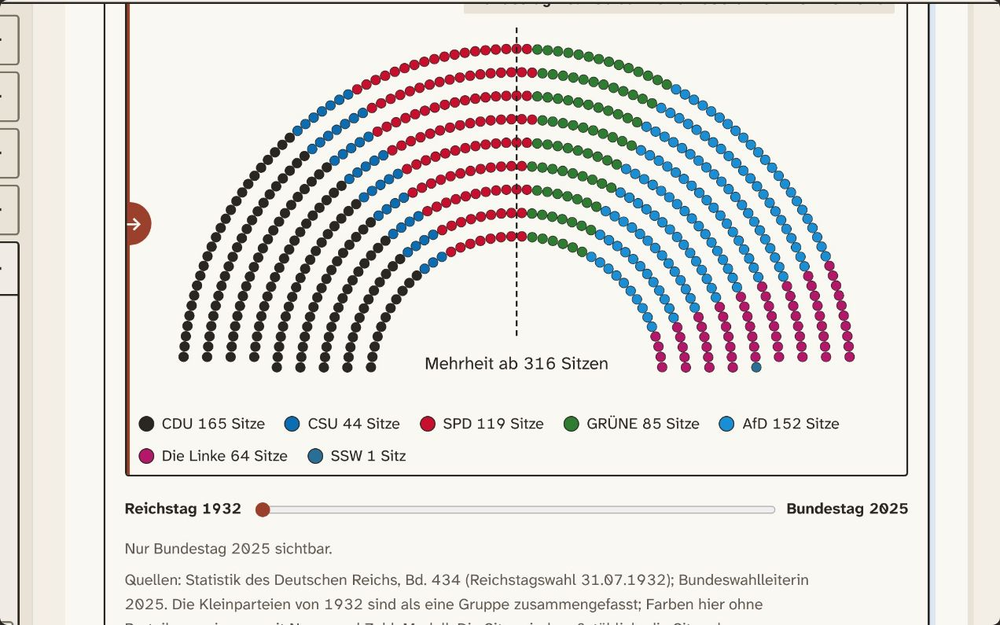
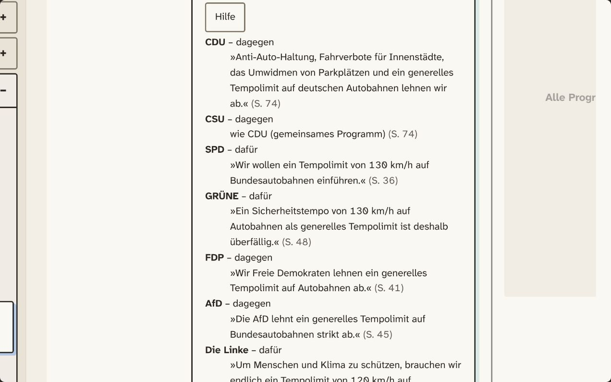
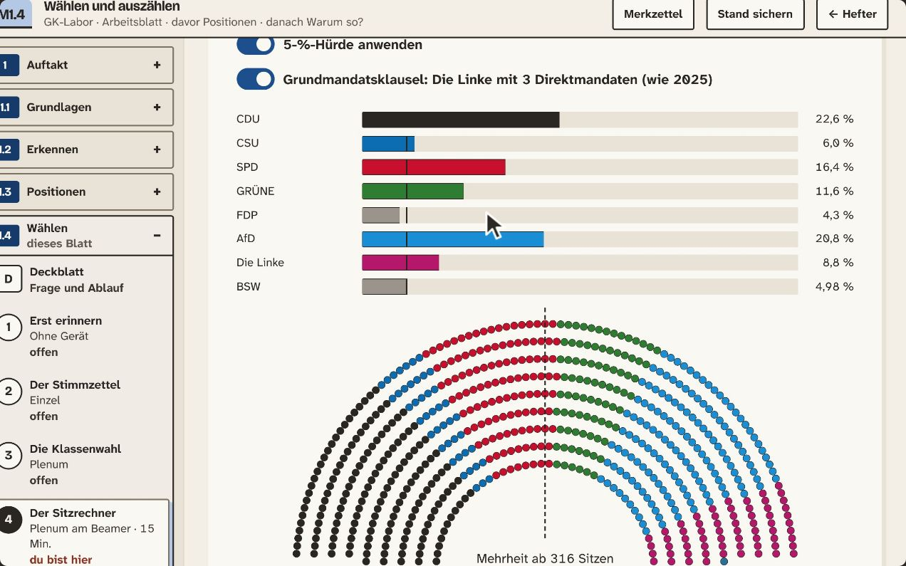
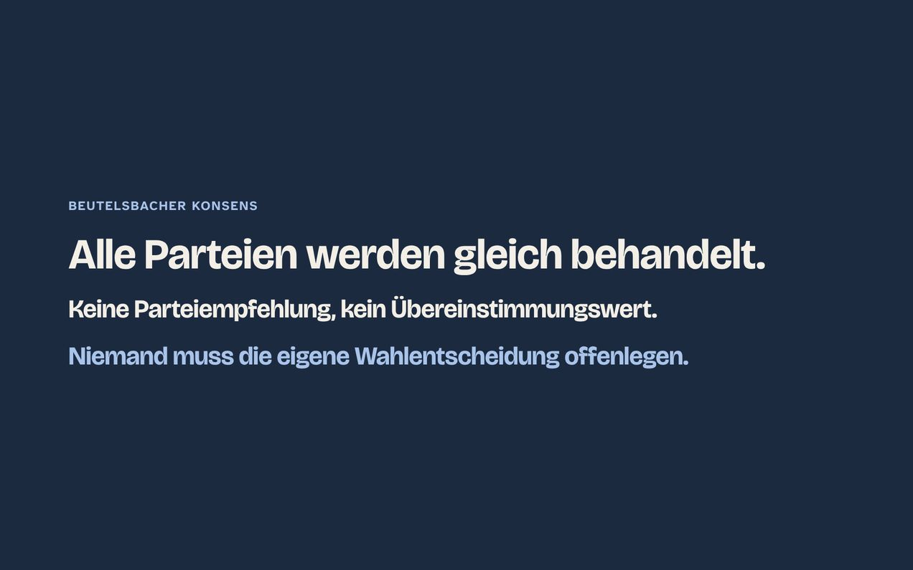
Film als Datei laden (MP4, 10 MB)
Reichstag 1932, Bundestag 2025: Was nimmt die 5-%-Hürde weg – und was kostet sie?
Neun Gruppen im Reichstag, sieben Parteien im Bundestag – und 13,78 % der Stimmen ohne Sitz.
Die Haltung
Erst verstehen, dann wählen.
Jede Position hat eine Quelle.
Politische Bildung, keine Wahlwerbung.
GK-Labor · Politik-Werkstatt
Was braucht eine Demokratie, um nicht zu scheitern?
Lernseiten für Gemeinschaftskunde, Jahrgangsstufe 1, Berufliches Gymnasium
Mario Walter Hilde-Domin-Schule Herrenberg
Das erste Halbjahr auf einer Seite: zwölf Arbeitsblätter, vier weitere Einheiten sind geplant.
Erst verstehen, dann wählen.
Beutelsbacher Konsens
Alle Parteien werden gleich behandelt.
Keine Parteiempfehlung, kein Übereinstimmungswert.
Niemand muss die eigene Wahlentscheidung offenlegen.
Eine Doppelstunde, ein Fall: die Zuckersteuer.
Ein Gesetzesplan in fünf Fassungen. Schieben zeigt: Was wurde gestrichen, was kam hinzu – und wer hatte ein Interesse daran?
Vom Wunsch bis zum Gesetz – und am Ende die Frage: Was lässt dieses Modell weg?
Vor der Klassenarbeit: aus dem Kopf abrufen, ehrlich ankreuzen, schreiben üben – und eine Probeklausur.
Im Raum
Abgestimmt wird anonym. Geurteilt wird im Raum.
Auf der Urteilslinie, im Plenum, am Beamer.
Erst verstehen,
dann wählen.
Mario Walter Hilde-Domin-Schule Herrenberg
Alle Bildschirme zeigen die echten Lernseiten. Eingaben sind Beispiele. Wahlergebnisse und Programmstellen stehen mit ihrer Quelle auf den Seiten.
Film 3 · Psychologie
Erst vermuten, dann erleben, dann aufdecken.
Wahlfach, Jahrgangsstufe 2 · Psycho-Labor
Film 3:56 Minuten, ohne Ton
Stand der Lernseiten: Block Wahrnehmung abgeschlossen, Block Motivation läuft.
Der Film beginnt mit einem Flacker-Test: Etwa neun Sekunden lang wechseln zwei Bilder knapp dreimal je Sekunde.
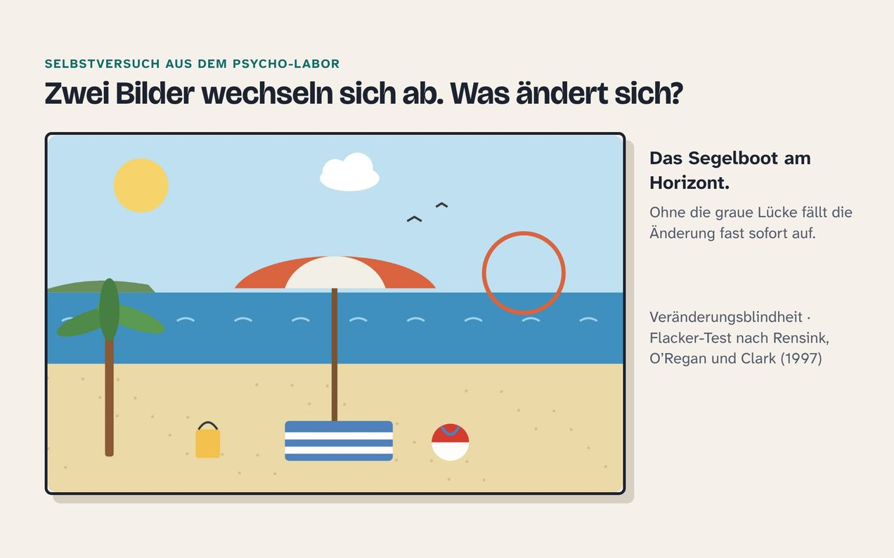
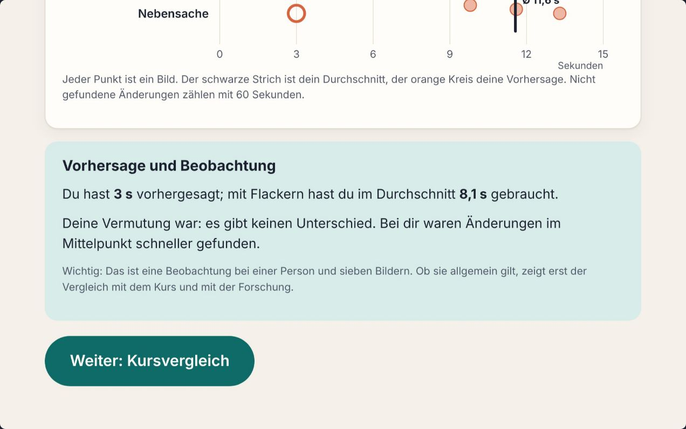
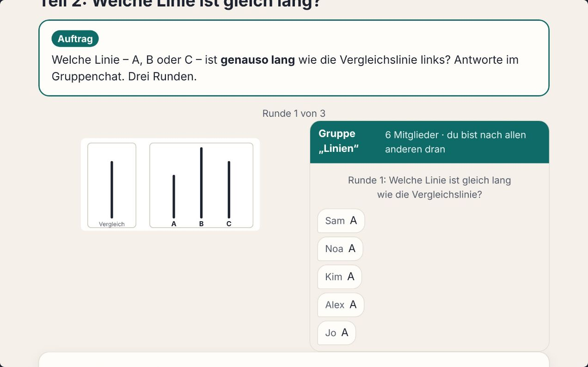
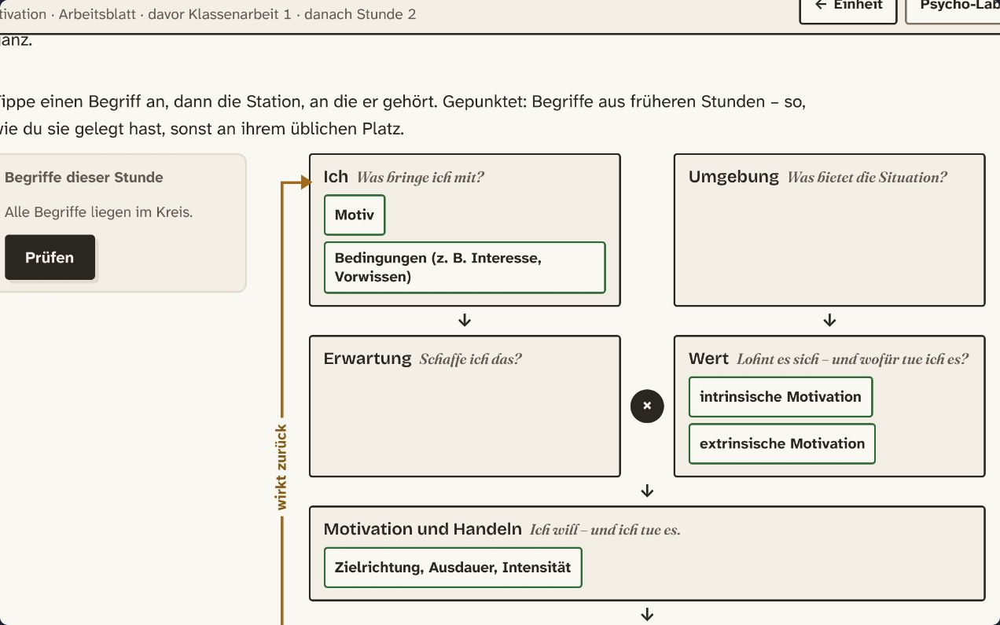
Film als Datei laden (MP4, 9 MB)
Zwei Bilder wechseln sich ab. Was ändert sich?
Das Segelboot am Horizont.
Ohne die graue Lücke fällt die Änderung fast sofort auf.
Veränderungsblindheit · Flacker-Test nach Rensink, O’Regan und Clark (1997)
Die Haltung
Erst vermuten, dann erleben, dann aufdecken.
Jeder Versuch endet mit der Frage: Was heißt das für mich?
Psycho-Labor · Warum ich so ticke
Was passiert in deinem Kopf?
Selbstversuche und Modelle für das Wahlfach Psychologie, Jahrgangsstufe 2
Mario Walter Hilde-Domin-Schule Herrenberg
Zwei Blöcke sind gebaut: Wahrnehmung und Motivation. Drei weitere sind geplant.
Jeder Versuch beginnt mit einer Vermutung. Jede Stunde im Block Motivation ist ein Arbeitsblatt.
Erst vermuten, dann erleben, dann aufdecken.
Datenschutz
Keine Namen. Keine Konten. Die Seiten senden keine Daten.
Der Kursvergleich per QR-Code gelang im Unterricht nicht. Seither: ein Gerät vorne, Gespräch im Plenum.
Ein Gruppenchat: Fünf andere antworten zuerst – alle dasselbe, alle falsch.
Danach wird alles aufgedeckt: Es gab zwei Fassungen. Die Antworten der anderen waren erfunden.
Und der eigene Versuch wird geprüft: anschauliche Demo oder belastbare Studie?
Jede Stunde ist ein Arbeitsblatt: links alle Aufträge, rechts immer einer.
Zwei Sprachen: Bucays Bild und der Fachbegriff. Die Geschichte liest die Lehrkraft aus dem Buch vor.
Jede Stunde endet gleich: Begriffe in den Motivationskreis legen, eine Verbindung knüpfen, ein Satz in die Lernspur.
Auf der Einheitsseite wächst der Überblick – bis zu »Das muss ich können« vor der Klassenarbeit.
Wozu das Tablet?
Das Labor ersetzt keinen Unterricht.
Es kommt nur dort zum Einsatz, wo das Tablet etwas leistet, das Papier nicht oder nur mühsam kann.
Erklären, Anwenden und Sichern geschehen danach analog.
Erst vermuten,
dann erleben,
dann aufdecken.
Mario Walter Hilde-Domin-Schule Herrenberg
Alle Bildschirme zeigen die echten Lernseiten. Eingaben sind Beispiele; die Kursauswertung zeigt die Beispieldaten der Seite.
Film 4 · Demokratiebildung
Im Mittelpunkt steht immer dasselbe: die Rechte jedes Kindes.
Fachschule für Sozialpädagogik · Wahlfach
Film 3:18 Minuten, ohne Ton
Stand des Leitfadens: Version 5.0 vom 18.11.2026 – Entwurf, noch nicht im Unterricht erprobt.
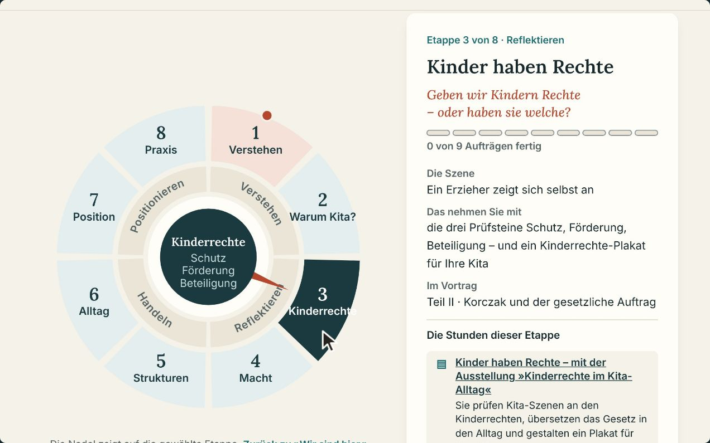
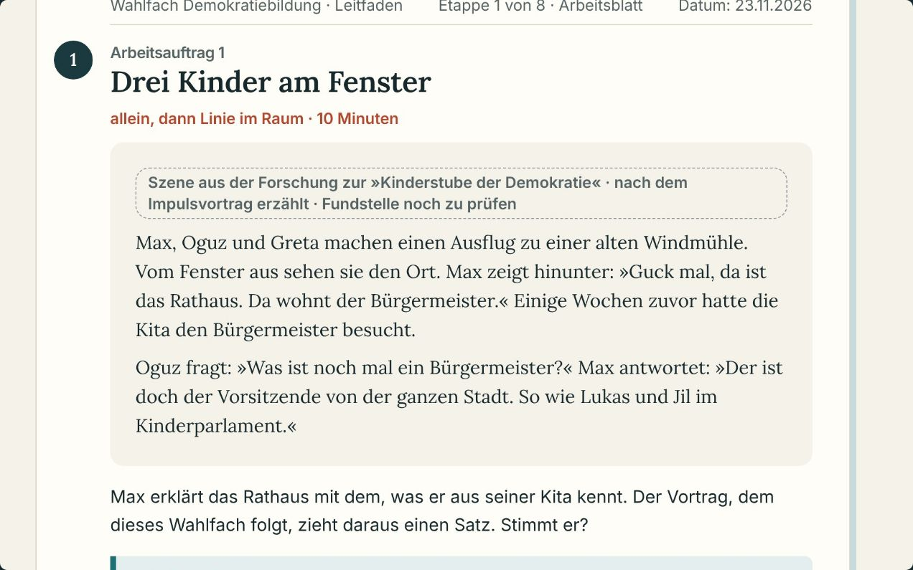
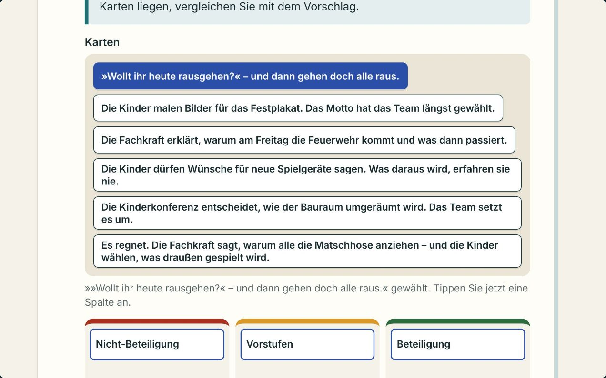
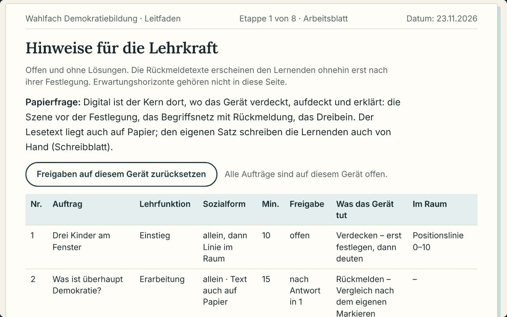
Film als Datei laden (MP4, 10 MB)
Am Anfang steht ein Satz, der reizt. Wie sehr stimmen Sie zu – von 0 bis 10?
Die Haltung
Im Mittelpunkt steht immer dasselbe: die Rechte jedes Kindes.
Schutz · Förderung · Beteiligung
Wer entscheidet? Wer wird gehört? Wer gehört dazu?
Wahlfach · Fachschule für Sozialpädagogik
Demokratie, jetzt und in Zukunft
Demokratiebildung in der frühen Kindheit · digitaler Leitfaden, Version 5.0 · Entwurf, noch nicht im Unterricht erprobt
Mario Walter Hilde-Domin-Schule Herrenberg
Acht Etappen führen durch das Jahr. Jede beginnt mit einer Szene aus einer Kita.
Darunter: die Arbeitsblätter, der rote Faden, der Vortrag als Kerncurriculum – und der Maßstab für das ganze Jahr.
Jede Doppelstunde folgt demselben Bogen – von der Szene bis zum eigenen Produkt.
Zu jedem Blatt: der Ablauf mit Zeiten, die Lehrfunktion je Auftrag – und die Papierfrage.
Was belegt ist – und was nicht
Ausgedachte Szenen sind als ausgedacht gekennzeichnet.
Rechtsangaben tragen ihren Prüfvermerk. Wo eine Fundstelle fehlt, steht: »noch zu prüfen«.
Entwurf, noch nicht im Unterricht erprobt.
Am Ende jedes Arbeitsblatts: ein Satz und eine Einschätzung. So wächst der Hefter durch das Jahr.
Kinder haben Rechte auf Schutz, Förderung und Beteiligung. Daran wird jede Situation geprüft.
Wer entscheidet?
Wer wird gehört?
Wer gehört dazu?
Mario Walter Hilde-Domin-Schule Herrenberg
Alle Bildschirme zeigen den echten Leitfaden (Version 5.0, Entwurf). Eingaben sind Beispiele.
Digitaler Unterricht
Vor jeder Phase steht die Papierprobe: Geht es auf Papier genauso gut, bleibt es Papier. Lässt sich der Vorteil des Tablets nicht in einem Satz sagen, bleibt die Phase analog.
Künstliche Intelligenz
Die Lernseiten und diese Filme sind mit Unterstützung eines KI-Systems gebaut. Konzept, Didaktik, Aufgaben und Texte stammen von der Lehrkraft; sie wählt aus, prüft und überarbeitet. KI-Nutzung ist dabei nicht dasselbe wie digitaler Unterricht: Ein mit KI erstelltes Arbeitsblatt darf ganz auf Papier bleiben.
Erprobung
Beobachtungen aus eigenen Stunden im November 2026. Es sind persönliche Erfahrungen, kein Wirksamkeitsnachweis.
Noch nicht im Unterricht erprobt: der Leitfaden Demokratiebildung (Version 5.0, Entwurf vom 18.11.2026).
Gespräch
Diese Seite zeigt Filme, keine Anwendungen: Kidu und die Lernseiten sind hier nicht verlinkt. Sie erreichen mich über die E-Mail, mit der Sie diesen Link erhalten haben.
Ich unterrichte an der Hilde-Domin-Schule Herrenberg, einer beruflichen Schule in Baden-Württemberg: Geschichte mit Gemeinschaftskunde und Psychologie am Beruflichen Gymnasium sowie in der Ausbildung von Erzieher*innen. Im Kollegium übernehme ich Fortbildung und Beratung zu KI und digitalem Unterricht. Mario Walter